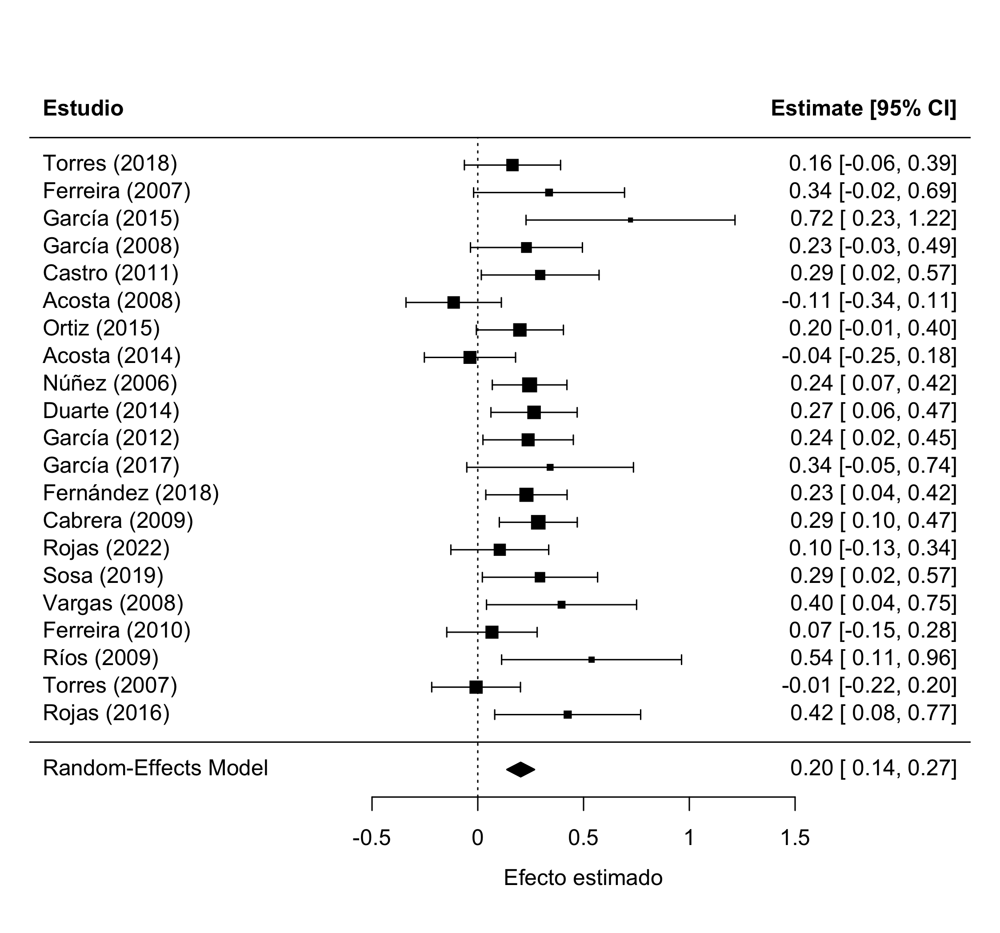
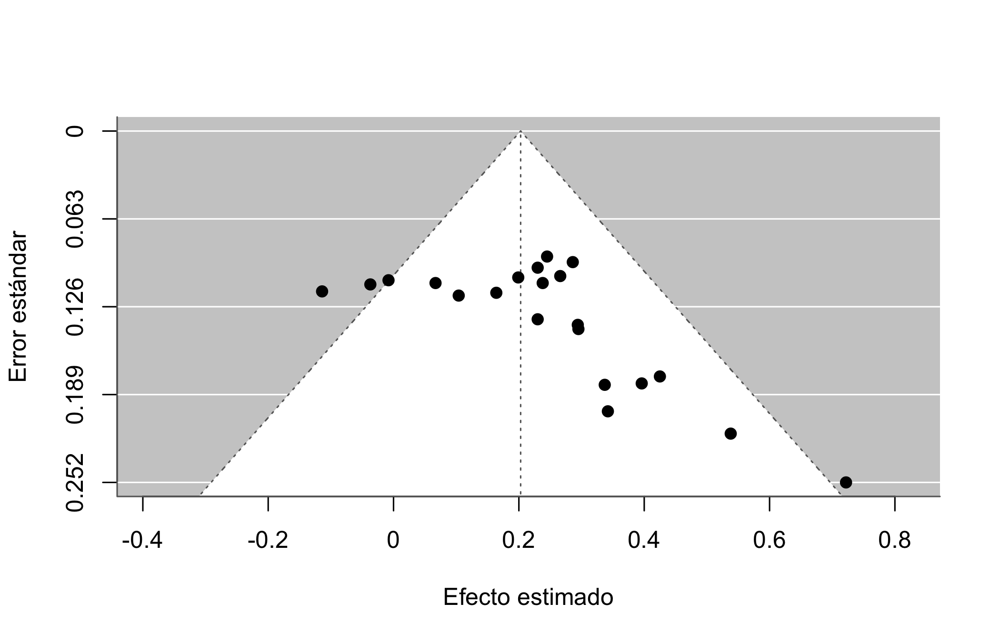
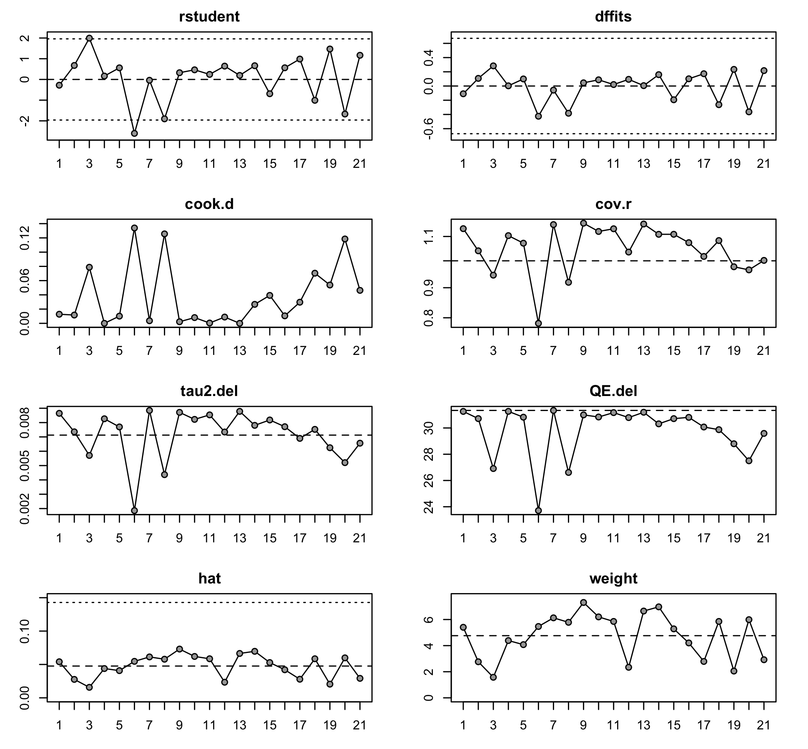

paquetes <- c("dplyr", "ggplot2", "metafor", "fabricatr")
for (pkg in paquetes) {
if (!require(pkg, character.only = TRUE)) {
install.packages(pkg, dependencies = TRUE)
library(pkg, character.only = TRUE)
}
}Referencia R: acumulación de evidencia
Parte 5 · meta-análisis con metafor, sesgo de publicación y heterogeneidad
Esta página reúne, con código que podés correr y copiar, todas las funciones de R del bloque de acumulación de evidencia (diapositivas), más varias funciones de metafor que no entraron en las slides pero que vas a querer tener a mano. Cada sección explica en pocas frases qué hace el comando, muestra un bloque ejecutable con su salida real, y cierra con una nota sobre cuándo conviene usarlo.
Trabajamos con dos literaturas simuladas. La primera se fabrica con el cajón adentro, para ver el sesgo de publicación por dentro: sabemos cuál es el efecto verdadero (0,15) y cuáles son los estudios que nunca se publicaron. La segunda son 24 estudios sobre transferencias condicionadas y asistencia escolar, la que se usa en la práctica. Como las semillas están fijas, los números coinciden con los de las diapositivas y con meta_estudios.csv y transferencias.csv.
1 Paquetes y datos
Cargá los paquetes del bloque. metafor es el paquete estándar para meta-análisis en R (Viechtbauer, 2010).
Cada fila es un estudio entero, no una persona. Simulamos primero la literatura completa (40 estudios, efecto verdadero 0,15) y después aplicamos el cajón, que es una sola línea de filter: los estudios grandes se publican siempre, los chicos sólo si salieron significativos.
apellidos <- c("García", "Souza", "Lima", "Rojas", "Fernández",
"Muñoz", "Silva", "Torres", "Vargas", "Herrera",
"Castro", "Mendoza", "Ríos", "Acosta", "Núñez",
"Ferreira", "Ortiz", "Cabrera", "Duarte", "Sosa")
paises <- c("Brasil", "México", "Chile", "Colombia", "Perú",
"Argentina", "Uruguay")
set.seed(27)
# 1. los 40 estudios que SE HICIERON
literatura <- fabricate(
N = 40,
autor = sample(apellidos, N, replace = TRUE),
anio = sample(2005:2022, N, replace = TRUE),
estudio = paste0(autor, " (", anio, ")"),
pais = sample(paises, N, replace = TRUE),
diseno = sample(c("RDD", "DiD", "OLS"), N, replace = TRUE),
n = round(exp(runif(N, log(60), log(600)))), # muestras de 60 a 600
ee = round(2.2 / sqrt(n), 3), # más grande, menos error
efecto = round(rnorm(N, 0.15, sqrt(0.08^2 + ee^2)), 3) # el verdadero es 0.15
)
# 2. el cajón: los grandes se publican siempre; los chicos, sólo si dieron t > 1.64
datos <- literatura |>
filter(ee <= 0.12 | efecto / ee > 1.64)
c(se_hicieron = nrow(literatura), se_publicaron = nrow(datos)) se_hicieron se_publicaron
40 21 Diecinueve estudios quedaron en el cajón: existieron, pero nadie los va a ver. Vos tenés las dos tablas porque las fabricaste; un meta-analista de verdad sólo tiene datos, y no hay ningún comando que le diga cuántos faltan.
NotaCuándo usarlo
Simular una literatura con el sesgo adentro es la forma más clara de entender qué puede y qué no puede hacer un meta-análisis. Para tu propio trabajo, lo que necesitás de cada estudio es el efecto (yi) y su error estándar (sei), en una escala comparable entre estudios.
2 El modelo: rma
rma() ajusta el meta-análisis: un promedio ponderado por precisión, donde cada estudio pesa el inverso de su varianza. Por defecto usa efectos aleatorios (el efecto verdadero puede variar entre contextos) estimados por REML.
m <- rma(yi = efecto, # el efecto de cada estudio
sei = ee, # su error estándar
data = datos)
m
Random-Effects Model (k = 21; tau^2 estimator: REML)
tau^2 (estimated amount of total heterogeneity): 0.0071 (SE = 0.0070)
tau (square root of estimated tau^2 value): 0.0844
I^2 (total heterogeneity / total variability): 31.88%
H^2 (total variability / sampling variability): 1.47
Test for Heterogeneity:
Q(df = 20) = 31.3359, p-val = 0.0509
Model Results:
estimate se zval pval ci.lb ci.ub
0.2028 0.0334 6.0817 <.0001 0.1375 0.2682 ***
---
Signif. codes: 0 '***' 0.001 '**' 0.01 '*' 0.05 '.' 0.1 ' ' 1Cómo leer la salida:
| En la salida | Qué significa |
|---|---|
k = 21 |
cuántos estudios entraron |
tau^2 |
cuánto varía el efecto real entre estudios |
tau |
lo mismo, en unidades del efecto |
I^2 = 31.9% |
ese desacuerdo, como porcentaje del total |
H^2 |
1,00 sería “ninguna heterogeneidad” |
Q, p |
el test formal: ¿hay más desacuerdo del que explica el azar? |
estimate |
el efecto combinado (el rombo del forest plot) |
ci.lb, ci.ub |
su intervalo del 95% |
El efecto combinado da 0,203, con intervalo [0,14; 0,27]: positivo y bien medido. Pero recordá que el verdadero es 0,15, así que este promedio está inflado.
NotaQué mirar
Mirá siempre el estimate junto con el \(I^2\). Un efecto combinado con \(I^2\) cerca de 0% resume bien a todos los estudios; con \(I^2\) arriba de 75%, el promedio esconde más de lo que muestra y conviene buscar qué explica el desacuerdo.
3 El forest plot
forest() dibuja el clásico: una fila por estudio, el cuadrado es su efecto (su tamaño, el peso), la línea su intervalo, y el rombo de abajo el efecto combinado.
forest(m, slab = datos$estudio,
xlab = "Efecto estimado", header = "Estudio")
NotaQué mirar
Fijate si las filas se parecen entre sí. Si ves dos grupos separados con el rombo pasando por el medio (donde casi no hay estudios), el promedio no describe a nadie y hay una variable que explica la diferencia. slab = pone las etiquetas y header = el encabezado de la columna.
4 El funnel plot
Cada punto es un estudio: su efecto en el eje x, su error estándar en el y, con el eje invertido (los grandes arriba, los chicos abajo). Si no hay sesgo, los estudios chicos se reparten a los dos lados del efecto combinado y el dibujo parece un embudo simétrico.
funnel(m, xlab = "Efecto estimado", ylab = "Error estándar")
La receta para leerlo: tapá la mitad de arriba (los grandes casi no se mueven), y en la banda de abajo contá los puntos a cada lado de la línea central. Acá la esquina de abajo a la izquierda quedó vacía, que es justo donde estarían los estudios chicos con efectos chicos o negativos.
NotaQué mirar
Un embudo simétrico es lo que querés. Un lado vacío en la parte baja es la huella del cajón. Ojo: la asimetría también puede venir de heterogeneidad real (los estudios chicos se hacen en contextos distintos), así que el funnel sugiere, no prueba.
5 El test de Egger
Lo que el ojo ve en el funnel, regtest() lo pone en números: una regresión de los efectos sobre su precisión. Si la pendiente difiere de cero, el embudo está torcido (Egger et al., 1997).
regtest(m)
Regression Test for Funnel Plot Asymmetry
Model: mixed-effects meta-regression model
Predictor: standard error
Test for Funnel Plot Asymmetry: z = 2.8694, p = 0.0041
Limit Estimate (as sei -> 0): b = -0.1323 (CI: -0.3686, 0.1040)El valor \(p\) da 0,004: la asimetría no es casualidad. Acá el sesgo lo fabricamos nosotros con el filter; en una literatura real no vas a saberlo, y por eso el chequeo se corre siempre.
NotaQué mirar
Un \(p\) chico es señal de alarma. Pero un \(p\) alto no prueba que no haya cajón: sólo dice que no encontramos la huella. Con pocos estudios el test tiene poca potencia, y hay sesgos (que un país entero no publique, por ejemplo) que no producen asimetría.
6 El chequeo de los estudios grandes
Los estudios grandes se publican con cualquier resultado, así que no arrastran el filtro de la significancia. Si el promedio se mueve al quedarte sólo con ellos, algo pasa.
grandes <- filter(datos, ee <= 0.12)
round(c(
publicados = unname(coef(m)),
solo_grandes = unname(coef(rma(yi = efecto, sei = ee, data = grandes))),
cajon_abierto = unname(coef(rma(yi = efecto, sei = ee, data = literatura)))
), 3) publicados solo_grandes cajon_abierto
0.203 0.145 0.152 Con los 21 publicados da 0,203; con los 12 grandes, 0,145; con los 40 que de verdad existieron, 0,152, que es el valor verdadero. El meta-análisis no falló: hizo su trabajo con la literatura que le dieron. El sesgo estaba en qué llegó a publicarse.
NotaQué mirar
La tercera columna no existe en la vida real, porque nadie ve el cajón. Las dos primeras sí las podés calcular siempre, y su diferencia es una señal barata y honesta. Si el promedio de los grandes es bastante menor, sospechá del cajón.
7 Trim-and-fill
trimfill() estima cuántos estudios “faltan” para que el embudo quede simétrico, los imputa y recalcula el efecto combinado. Es una forma de preguntar cuánto cambiaría la conclusión si el cajón se abriera.
tf <- trimfill(m)
tf
Estimated number of missing studies on the left side: 5 (SE = 3.0722)
Random-Effects Model (k = 26; tau^2 estimator: REML)
tau^2 (estimated amount of total heterogeneity): 0.0097 (SE = 0.0077)
tau (square root of estimated tau^2 value): 0.0987
I^2 (total heterogeneity / total variability): 35.98%
H^2 (total variability / sampling variability): 1.56
Test for Heterogeneity:
Q(df = 25) = 44.4695, p-val = 0.0096
Model Results:
estimate se zval pval ci.lb ci.ub
0.1688 0.0334 5.0592 <.0001 0.1034 0.2342 ***
---
Signif. codes: 0 '***' 0.001 '**' 0.01 '*' 0.05 '.' 0.1 ' ' 1c(estudios_imputados = tf$k0, efecto_corregido = round(unname(coef(tf)), 3))estudios_imputados efecto_corregido
5.000 0.169 Imputa 5 estudios y baja el efecto de 0,203 a 0,169, más cerca del verdadero 0,15. Sigue sin llegar del todo, y esa es la lección.
NotaQué mirar
Tratalo como análisis de sensibilidad, no como corrección. Si el efecto corregido sigue lejos de cero, tu conclusión es más robusta; si se derrumba, el resultado dependía de los estudios que faltan. La solución de fondo no es estadística: es que los nulos se publiquen.
8 Efectos fijos o aleatorios
Por defecto rma() usa efectos aleatorios: supone que el efecto verdadero varía entre contextos y suma esa varianza (\(\tau^2\)) al peso de cada estudio. Con method = "EE" pedís efectos fijos (equal effects), que asume un único efecto verdadero para todos.
fijos <- rma(yi = efecto, sei = ee, data = datos, method = "EE")
round(c(aleatorios = unname(coef(m)),
fijos = unname(coef(fijos))), 3)aleatorios fijos
0.203 0.195 Acá dan parecido porque la heterogeneidad es baja (\(I^2\) ≈ 32%). Cuanto más alto el \(I^2\), más se separan: los efectos fijos le dan mucho más peso a los estudios grandes y producen intervalos demasiado angostos.
NotaCuándo usarlo
En ciencias sociales, efectos aleatorios es casi siempre la opción correcta, porque los estudios se hacen en países, años y poblaciones distintas. Reservá los efectos fijos para cuando de verdad creas que todos los estudios estiman exactamente la misma cantidad.
9 Subgrupos: cuando el promedio esconde dos historias
Pasemos a la segunda literatura: 24 estudios sobre transferencias condicionadas y asistencia escolar. Acá no sabés cómo se generó, así que tratala como una literatura de verdad.
set.seed(46)
transferencias <- fabricate(
N = 24,
autor = sample(apellidos, N, replace = TRUE),
anio = sample(2008:2023, N, replace = TRUE),
estudio = paste0(autor, " (", anio, ")"),
pais = sample(c("Brasil", "México", "Colombia", "Perú",
"Honduras", "Nicaragua", "Ecuador"), N, replace = TRUE),
contexto = rep(c("rural", "urbano"), each = 12),
n = round(exp(runif(N, log(200), log(2000)))),
ee = round(1.5 / sqrt(n), 3),
efecto = round(rnorm(N, ifelse(contexto == "rural", 0.35, 0.10),
sqrt(0.04^2 + ee^2)), 3)
)
m_tr <- rma(yi = efecto, sei = ee, data = transferencias)
c(efecto = round(unname(coef(m_tr)), 3), I2 = round(m_tr$I2, 1))efecto I2
0.244 84.900 El efecto combinado da 0,244 y parece sólido, pero el \(I^2\) es 84,9%: casi todo el desacuerdo es real. Si es real, algo lo explica. Probemos con el contexto, corriendo un rma() por subgrupo.
rural <- rma(yi = efecto, sei = ee,
data = filter(transferencias, contexto == "rural"))
urbano <- rma(yi = efecto, sei = ee,
data = filter(transferencias, contexto == "urbano"))
data.frame(
contexto = c("rural", "urbano"),
efecto = round(c(coef(rural), coef(urbano)), 3),
ic_bajo = round(c(rural$ci.lb, urbano$ci.lb), 3),
ic_alto = round(c(rural$ci.ub, urbano$ci.ub), 3),
I2_porc = round(c(rural$I2, urbano$I2), 1)
) contexto efecto ic_bajo ic_alto I2_porc
1 rural 0.360 0.331 0.389 0.1
2 urbano 0.105 0.070 0.140 0.1Rural da 0,360 y urbano 0,105: los intervalos ni se tocan. Y el \(I^2\) se desploma de 84,9% a ≈ 0% dentro de cada grupo, o sea que el contexto explicaba todo el desacuerdo. El 0,244 no es el efecto de nada: es el promedio de dos programas distintos, y ninguno de los dos rinde 0,244.
NotaQué mirar
Un \(I^2\) alto no es un defecto del meta-análisis: es una pregunta, y casi siempre la mejor de todas. Cuando parte un promedio en dos historias con intervalos que no se solapan, reportá los subgrupos, no el promedio.
10 Meta-regresión
Cortar por subgrupos a mano funciona con una variable categórica. rma() con el argumento mods = generaliza la idea: una regresión donde la variable dependiente es el efecto de cada estudio y los predictores son características del estudio.
mr <- rma(yi = efecto, sei = ee, mods = ~ contexto, data = transferencias)
mr
Mixed-Effects Model (k = 24; tau^2 estimator: REML)
tau^2 (estimated amount of residual heterogeneity): 0.0000 (SE = 0.0008)
tau (square root of estimated tau^2 value): 0.0021
I^2 (residual heterogeneity / unaccounted variability): 0.13%
H^2 (unaccounted variability / sampling variability): 1.00
R^2 (amount of heterogeneity accounted for): 99.98%
Test for Residual Heterogeneity:
QE(df = 22) = 23.2593, p-val = 0.3872
Test of Moderators (coefficient 2):
QM(df = 1) = 120.6731, p-val < .0001
Model Results:
estimate se zval pval ci.lb ci.ub
intrcpt 0.3601 0.0149 24.1451 <.0001 0.3308 0.3893 ***
contextourbano -0.2553 0.0232 -10.9851 <.0001 -0.3009 -0.2098 ***
---
Signif. codes: 0 '***' 0.001 '**' 0.01 '*' 0.05 '.' 0.1 ' ' 1El intercepto (0,360) es el efecto en el grupo de referencia (rural) y contextourbano (−0,255) es cuánto menos rinde en la ciudad. El test \(Q_M\) pregunta si el moderador explica algo, y acá lo rechaza con holgura. Con más de un moderador, escribís mods = ~ contexto + anio + n.
# en la primera literatura: ¿cambia el efecto según el diseño del estudio?
rma(yi = efecto, sei = ee, mods = ~ diseno, data = datos)
Mixed-Effects Model (k = 21; tau^2 estimator: REML)
tau^2 (estimated amount of residual heterogeneity): 0.0094 (SE = 0.0084)
tau (square root of estimated tau^2 value): 0.0971
I^2 (residual heterogeneity / unaccounted variability): 37.45%
H^2 (unaccounted variability / sampling variability): 1.60
R^2 (amount of heterogeneity accounted for): 0.00%
Test for Residual Heterogeneity:
QE(df = 18) = 30.3434, p-val = 0.0342
Test of Moderators (coefficients 2:3):
QM(df = 2) = 0.5291, p-val = 0.7675
Model Results:
estimate se zval pval ci.lb ci.ub
intrcpt 0.1809 0.0503 3.5960 0.0003 0.0823 0.2795 ***
disenoOLS 0.0419 0.0726 0.5777 0.5635 -0.1004 0.1842
disenoRDD 0.0851 0.1509 0.5636 0.5730 -0.2108 0.3809
---
Signif. codes: 0 '***' 0.001 '**' 0.01 '*' 0.05 '.' 0.1 ' ' 1
NotaQué mirar
Es la forma de preguntar si el diseño, el país o el año explican las diferencias entre estudios. Cuidado con dos cosas: con pocos estudios te quedás sin grados de libertad enseguida (una regla práctica pide unos 10 estudios por moderador), y los moderadores no se aleatorizaron, así que las diferencias entre subgrupos son asociaciones, no efectos causales.
11 Leave-one-out y estudios influyentes
¿El resultado depende de un solo estudio? leave1out() reajusta el meta-análisis sacando un estudio por vez, y muestra cómo se mueve el efecto combinado.
l1o <- leave1out(m)
data.frame(estudio = datos$estudio,
efecto_sin_el = round(l1o$estimate, 3)) |>
arrange(efecto_sin_el) |>
head(5) estudio efecto_sin_el
1 García (2015) 0.193
2 Ríos (2009) 0.195
3 Rojas (2016) 0.196
4 Cabrera (2009) 0.197
5 Vargas (2008) 0.197Si sacar cualquier estudio mueve poco el promedio, el resultado es estable. influence() va más lejos y calcula diagnósticos por estudio (distancia de Cook, residuos estandarizados) para detectar los que mandan.
inf <- influence(m)
plot(inf)
NotaCuándo usarlo
Corré leave-one-out siempre que tengas pocos estudios, que es lo habitual en ciencias sociales. Si un solo estudio sostiene la conclusión, decilo en el paper. Un estudio influyente no se borra: se explica (muestra enorme, contexto raro, diseño distinto).
12 Para seguir
TipEnlaces y lecturas
El paquete
metafor: la web del paquete, con una documentación excelente y muchos ejemplos reproducibles- Viechtbauer (2010): el artículo que lo presenta, en el Journal of Statistical Software
Para leer
- Harrer, Cuijpers, Furukawa y Ebert (2021), Doing Meta-Analysis with R: el manual práctico, gratis online
- Egger et al. (1997): el test de asimetría del funnel
- Rosenthal (1979): el file-drawer problem, el artículo original
Sobre el cajón y la replicación
- Franco, Malhotra y Simonovits (2014) y Moniz, Druckman y Freese (2025): el cajón medido con TESS, diez años después
- Open Science Collaboration (2015): las 100 replicaciones en psicología
- Aczél, Szászi, Nosek et al. (2026): 457 analistas, 100 estudios, en Nature
Nuestro caso del bloque
- Freire, Mignozzetti, Roman y Alptekin (2023): el meta-análisis del tamaño de las legislaturas y el gasto público, en el British Journal of Political Science
Prácticas reproducibles
- La guía de reproducibilidad del taller, con el kit paso a paso
- The Turing Way y Gentzkow y Shapiro (2014)